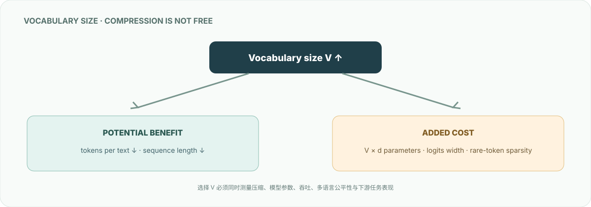
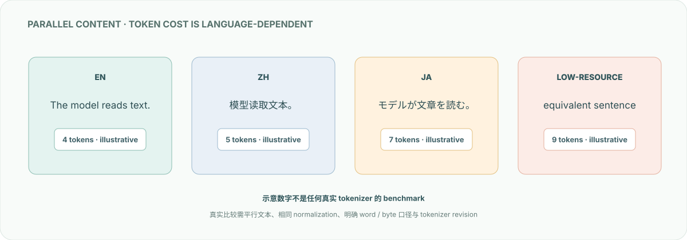

MODULE 20 / LLM DATA ENGINEERING
词表设计与优化
量化词表大小对 embedding、LM head、上下文长度和多语言 token premium 的影响，建立可验证的词表选择流程。
词表到底应该是 16K、32K、50K、128K，还是更大？增大词表通常能让常见字符串被更少 token 表示，但模型需要更大的 embedding / output head，输出 logits 也更宽。多语言场景还会出现 token premium：相同内容在不同语言里可能消耗完全不同数量的 token。词表设计是压缩效率、模型参数、训练分布与语言公平性的联合优化问题。
词表规模连接了数据、模型和推理成本

词表 是 tokenizer 输出 ID 的集合。对 hidden size 为 的模型，输入 embedding 矩阵的参数量是 。如果输出 LM head 与 embedding 不共享权重，输出投影还需要另一份约 的矩阵；如果 tied embeddings，则两者共享参数，但输出 logits 的计算仍然需要把 hidden state 投影到 个候选 token。
这里 表示输入输出权重绑定， 表示不绑定。若权重精度每个参数占 bytes，则仅词表权重的理论存储量约为 。这个估算不包括 optimizer states、梯度、临时 logits buffer、padding、量化元数据或分片冗余。
词表变大后，序列长度如何变化？
对固定文本字节数 ，若 tokenizer 的平均 bytes-per-token 为 ，token 数粗略约为 。这是同一语言、同一语料切片内的容量估算。不同语言的 byte premium 不同，bytes/token 不适合作为跨语言压缩公平性的直接指标；应使用平行文本的 corpus token count（CTC）并相对参考语言归一化。更大的 token 单元可能让同样文本占用更少 context positions；但 bytes-per-token 不会随词表大小线性增长，也受语言、预分词、训练语料和文本类型影响。

词表变大有三个相反方向的效应：
- 序列缩短：常见字符串可以被更长的子词覆盖，固定 token context 能容纳更多原始文本。
- 词表矩阵变宽：embedding 与输出 head 参数、checkpoint 大小、logits 宽度和 softmax 计算增加。
- 统计稀疏：更多 token 需要在训练语料中获得足够曝光；稀有 token 可能得到很少更新，增加覆盖并不自动带来更好的表示。
怎样评价一个词表？
至少要把 tokenizer 内在指标和模型下游表现分开。TokLens（ACL 2026 Student Research Workshop）提出六种跨语言内在指标：fertility、characters per token、compression ratio、normalized sequence length、single-token retention rate 和 cross-lingual parity，并在 24 个 tokenizer、15 种语言上做分析。其摘要报告 GPT-2 在日语上每词 token 数是英语的 56 倍，而 Qwen2.5 / Gemma-2 的差距降到 4 倍以内；在控制模型规模后，没有一个内在指标能预测英语 benchmark 表现，但这些指标与 MMLU-ProX 的逐语言表现显著相关。作者明确指出关联仍是相关性证据，并部分受到预训练数据组成混淆，不能把某个压缩指标当作通用性能预测器。
| 指标 | 计算口径（示意） | 解释与限制 |
|---|---|---|
| Fertility | tokens / words | 词边界依赖语言和分词器，中文不能直接套用英文空格词口径。 |
| Bytes per token | UTF-8 bytes / tokens | 适合同一语言内的压缩统计；不同语言 byte premium 不同，不能直接当作跨语言公平指标。 |
| Corpus token count / token premium | 对平行文本统计 token 数，并相对参考语言归一化 | 固定信息内容后比较 token cost；报告语言、样本和参考语言。 |
| Characters per token | Unicode code points / tokens | 不同 script 的字符编码字节数不同，因此不能替代 bytes/token。 |
| Normalized sequence length | 相对于样本长度基准的 token 序列长度 | 归一化方式必须在实验报告中明确。 |
| Single-token retention | 目标常见词项中完整单 token 的比例 | 词表保留词项越多不必然代表模型越懂这些概念。 |
| Cross-lingual parity | 平行文本的 token cost 差异 | 需要翻译质量、语义匹配和长度控制。 |
研究证据：128K 不是一个“最优答案”
Meta 在 Llama 3 发布说明中介绍了 128K vocabulary，并指出相对 Llama 2 的 tokenizer 编码效率有所改善。这说明更大的词表可以是具体模型设计的一部分，但不证明 128K 对所有模型或所有语言都是最优值。
ByT5 论文还给出一个有用的成本提醒：在其 mT5-Base 对照中，词表 embedding 与输出 softmax 矩阵合计约 256M 参数，占该模型约 66% 的参数量；这是该模型与配置下的结果，不应外推到所有架构。2025 年 NeurIPS 论文 Explaining and Mitigating Crosslingual Tokenizer Inequities 分析约 7,000 个、覆盖 97 种语言的可比 tokenizer，发现词表大小与预分词方式都会影响 token premium；简单地把词表统一做大，并不能消除语言间的 token cost 差异。论文还指出，跨语言的 bytes-per-token 会受到 byte premium 影响，因此用平行文本 corpus token count（CTC）比较更合适。作者研究按语言寻找更合适的词表大小，以及允许跨空格合并的 SuperBPE。
TokLens（2026）报告，在其评估的样本中 GPT-2 tokenizer 的日语 tokens-per-word 相对英语差异很大，而 Qwen2.5 / Gemma-2 等新 tokenizer 的差距较小。该结果是特定测试集与 tokenizer 集合的比较，不应当直接外推到任意语料。
交互计算器：词表矩阵会占多少参数与显存？
这是一个理论参数 / 权重存储估算。假设 hidden size 固定、embedding 与 LM head 按选择共享或不共享，不计优化器状态、激活、logits 临时 buffer 和分片开销。
from scripts.vocab_cost import vocabulary_parameter_count, vocabulary_weight_bytes
vocab_size = 128_000
hidden_size = 4_096
tied = True
parameters = vocabulary_parameter_count(vocab_size, hidden_size, tied)
weight_bytes = vocabulary_weight_bytes(vocab_size, hidden_size, 2, tied)
print(parameters, weight_bytes / (1024 ** 3))这里的 128,000 与 4,096 是教学输入，不是对某个已发布模型配置的复刻。共享权重只减少参数矩阵的重复存储，不会让输出 logits 的词表维度消失。
一个可执行的词表设计流程
- 定义目标文本分布：列出语言、领域、代码、数学、URL、表格和特殊格式的目标占比。
- 构建 tokenizer 训练集：去重、许可审查、语言分层，并避免测试集泄漏。
- 设定候选词表规模：例如 16K / 32K / 64K / 128K；这些只是实验点，不是行业默认。
- 固定其他因素：统一 tokenizer 算法、normalizer、pre-tokenizer、语料预算和评估样本。
- 计算成本：embedding / head 参数、权重 bytes、logits shape、token throughput 和上下文容量。
- 测量公平性：用平行文本评估各语言 token premium，单独检查低资源语言和特殊字符。
- 做小规模下游验证：在相同模型、训练 token、优化器和数据配比下比较，而不是只凭压缩率选型。
参考资料
- Meta Llama 3 release notes：128K tokenizer vocabulary 的模型设计背景。
- tiktoken public encoding definitions：GPT-2 / r50k vocabulary size 与编码配置。
- Chiu (2026), TokLens: A Multilingual Lens on Tokenizer Quality for LLMs，ACL 2026 SRW。
- Arnett et al. (2025), Explaining and Mitigating Crosslingual Tokenizer Inequities，NeurIPS 2025。
- Ali et al. (2023), Tokenizer Choice For LLM Training: Negligible or Crucial?。
- ByT5, Towards a Token-Free Future with Pre-trained Byte-to-Byte Models：词表与 embedding / softmax 参数成本的讨论。